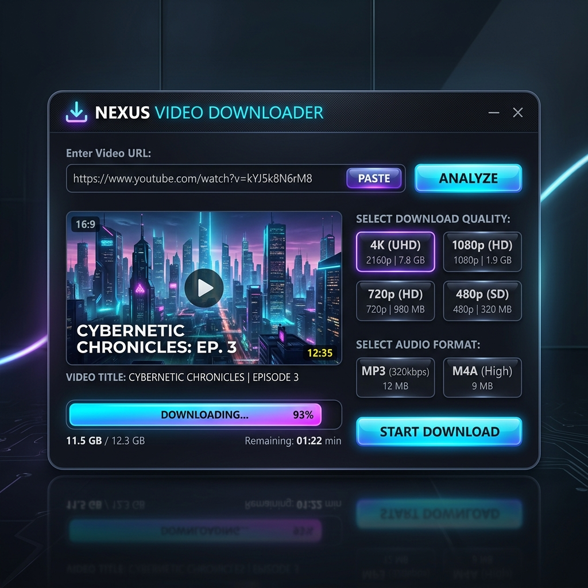

CERTIFICATE OF ACHIEVEMENT
Expert: Microsoft Word
PROUDLY PRESENTED TO
Chamroeun Saran
For demonstrating exceptional proficiency and practical mastery in document design and technical instruction.
Frontend Developer & UI Designer
Years of
Learning & Crafting
I am a dedicated Frontend Developer and Computer Science Teacher based in Cambodia. I specialize in both creating modern web applications and empowering others through technical education. With extensive experience teaching Microsoft Office (Word, Excel, PowerPoint), I bridge the gap between complex technology and everyday productivity.
Optimized code for blazing speed.
Looks great on any device or screen.

A robust media processing tool that extracts high-quality video (up to 4K) from multiple social platforms. Built with a focus on multithreading and custom scraper logic.
Modern task management built with Vanilla JS.
A high-end landing page template with parallax effects and modern architectural layout.
A complex analytics dashboard featuring data visualization and sleek dark mode aesthetics.
Combining development and teaching to empower others.
Lead practical training sessions for over 100+ students, focusing on:
Expertise in hardware/software maintenance & OS management:
Mastered enterprise switching, routing protocols, VLANs, and network security at USEA.
Empowered over 100 students through specialized Office & Media training.
Built the 'Video Pro' engine and provided expert technical support for local businesses.
Graduated from University of South-East Asia with formal major in Information Technology.
Crafting premium user experiences and high-performance web applications.
I keep up with the latest industry trends and focus on writing clean, scalable code.
Higher Education Degree in Information Technology from the University of South-East Asia.
Hands-on project-based JavaScript & DOM engineering certification from Udemy.
Enterprise network architecture, VLANs, routing protocols, and wireless essentials from Cisco.
Certified Teacher Internship in Microsoft Word & Excel from University of South-East Asia.
Advanced document design & automation training.
Complex data analysis & financial calculations.
PC maintenance & OS optimization certificate.
Your message has been sent!
PROUDLY PRESENTED TO
For demonstrating exceptional proficiency and practical mastery in document design and technical instruction.